Android SDK 集成指南
使用提示
本文是 Android SDK 标准的集成指南文档。
匹配的 SDK 版本为：v2.1.3及以后版本。
- 3 分钟快速 Demo（Android）：如果您想要快速地测试、感受下极光推送的效果，请参考本文在几分钟内跑通Demo。
- 极光推送文档网站上，有极光推送相关的所有指南、API、教程等全部的文档。包括本文档的更新版本，都会及时地发布到该网站上。
- 极光社区网站：大家除了文档之外，还有问题与疑问，会到这里来提问题，以及时地得到解答。
- 如果您看到本文档，但还未下载Android SDK，请访问SDK下载页面下载。
产品功能说明
极光推送（JPush）是一个端到端的推送服务，使得服务器端消息能够及时地推送到终端用户手机上，让开发者积极地保持与用户的连接，从而提高用户活跃度、提高应用的留存率。极光推送客户端支持 Android, iOS 两个平台。
本 Android SDK 方便开发者基于 JPush 来快捷地为 Android App 增加推送功能。
主要功能
- 保持与服务器的长连接，以便消息能够即时推送到达客户端
- 接收通知与自定义消息，并向开发者App 传递相关信息
主要特点
- 客户端维持连接占用资源少、耗电低
- SDK丰富的接口，可定制通知栏提示样式
- 服务器大容量、稳定
jpush-android-(cpu-type)-2.x.x.zip 集成压缩包内容
- AndroidManifest_androidstudio_example.xml / AndroidManifest_eclipse_example.xml
- 客户端嵌入SDK参考的配置文件
- libs/jpush-android-2.x.y.jar
- SDK Java 开发包
- libs/(cpu-type)/libjpush2xy.so
- SDK native 开发包
- res
- 集成SDK必须添加的资源文件
- example
- 是一个完整的 Android 项目，通过这个演示了 JPush SDK 的基本用法，可以用来做参考。
Android SDK 版本
目前SDK只支持Android 2.3或以上版本的手机系统。富媒体信息流功能则需Android3.0或以上版本的系统。
SDK集成步骤
导入 SDK 开发包到你自己的应用程序项目
- 解压缩 jpush-sdk_v1.x.y.zip 集成压缩包
- 复制 libs/jpush-sdk-release1.x.y.jar 到工程 libs/ 目录下
- 复制 libs/armeabi/libjpush1xy.so 到工程 libs/armeabi 目录下
- 复制 libs/armeabi-v7a/libjpush.so 到工程 libs/armeabi-v7a 目录下
如果您的项目有 libs/armeabi-v7a 这个目录，请把 libs/armeabi-v7a下的so文件 也复制一份到这个目录。
- 复制 res/drawable-hdpi 中的资源文件到工程的 res/drawable-hdpi/ 目录下
- 复制 res/layout 中的布局文件到工程的 res/layout/ 目录下
说明 1：若没有drawable-xxxx/jpush_notification_icon这个资源默认使用应用图标作为通知icon，在5.0以上系统将应用图标作为statusbar icon可能显示不正常，用户可定义纯色icon替换这个文件，文件名不要变。
说明 2：如果要在gradle中配置 shrinkResources true 用来清理多余资源，请在res/raw/ 中添加一个keep.xml来描述保留JPushSDK中的必要资源。示例请参考版本包中的 res/raw/keep.xml文件。(2.1.5版本以上)
集成 JPush Android SDK 的混淆
-
请下载4.x及以上版本的proguard.jar， 并替换你Android Sdk "tools\proguard\lib\proguard.jar"
-
开发工具使用Eclipse或者Android Studio,请在工程的project.properties中配置好proguard-android.txt，并且在proguard-android.txt配置：
-dontoptimize -dontpreverify -dontwarn cn.jpush.** -keep class cn.jpush.** { *; } -
v2.0.5 及以上的版本由于引入了protobuf ，在上面基础之上增加排出混淆的配置。
#==================gson========================== -dontwarn com.google.** -keep class com.google.gson.** {*;} #==================protobuf====================== -dontwarn com.google.** -keep class com.google.protobuf.** {*;} -
如果您启用了分包配置，请在相应模块下的gradle中指定配置文件，如：
defaultConfig { ... multiDexEnabled true multiDexKeepProguard file('multiDexKeep.pro') ... }并在multiDexKeep.pro文件中添加如下配置，从而使JPushSDK在主dex中：
-dontwarn cn.jpush.** -keep class cn.jpush.** { *; }
配置 AndroidManifest.xml
根据 SDK 压缩包里的 AndroidManifest.xml 样例文件，来配置应用程序项目的 AndroidManifest.xml 。
主要步骤为：
- 复制备注为 "Required" 的部分
- 将备注为替换包名的部分，替换为当前应用程序的包名
- 将AppKey替换为在Portal上注册该应用的的Key,例如（9fed5bcb7b9b87413678c407）
Eclipse中AndroidManifest 示例
AndroidManifest.xml权限配置：
<?xml version="1.0" encoding="utf-8"?>
<manifest xmlns:android="http://schemas.android.com/apk/res/android"
package="您应用的包名"
android:versionCode="100"
android:versionName="1.0.0"
>
<uses-sdk android:minSdkVersion="11" android:targetSdkVersion="17" />
<!-- Required -->
<permission android:name="您应用的包名.permission.JPUSH_MESSAGE" android:protectionLevel="signature" />
<!-- Required -->
<uses-permission android:name="您应用的包名.permission.JPUSH_MESSAGE" />
<uses-permission android:name="android.permission.RECEIVE_USER_PRESENT" />
<uses-permission android:name="android.permission.INTERNET" />
<uses-permission android:name="android.permission.WAKE_LOCK" />
<uses-permission android:name="android.permission.READ_PHONE_STATE" />
<uses-permission android:name="android.permission.WRITE_EXTERNAL_STORAGE" />
<uses-permission android:name="android.permission.READ_EXTERNAL_STORAGE" />
<uses-permission android:name="android.permission.VIBRATE" />
<uses-permission android:name="android.permission.MOUNT_UNMOUNT_FILESYSTEMS" />
<uses-permission android:name="android.permission.ACCESS_NETWORK_STATE" />
<uses-permission android:name="android.permission.WRITE_SETTINGS" />
<!-- Optional. Required for location feature -->
<uses-permission android:name="android.permission.ACCESS_COARSE_LOCATION" />
<uses-permission android:name="android.permission.ACCESS_WIFI_STATE" />
<uses-permission android:name="android.permission.CHANGE_WIFI_STATE" />
<uses-permission android:name="android.permission.ACCESS_FINE_LOCATION" />
<uses-permission android:name="android.permission.ACCESS_LOCATION_EXTRA_COMMANDS" />
<uses-permission android:name="android.permission.CHANGE_NETWORK_STATE" />
应用包名及appkey替换：
<application
android:icon="@drawable/ic_launcher"
android:label="@string/app_name"
android:name="Your Application">
<!-- Required SDK 核心功能-->
<!-- option since 2.0.5 可配置PushService，DaemonService,PushReceiver,AlarmReceiver的android:process参数 将JPush相关组件设置为一个独立进程 -->
<!-- 如：android:process=":remote" -->
<service
android:name="cn.jpush.android.service.PushService"
android:enabled="true"
android:exported="false" >
<intent-filter>
<action android:name="cn.jpush.android.intent.REGISTER" />
<action android:name="cn.jpush.android.intent.REPORT" />
<action android:name="cn.jpush.android.intent.PushService" />
<action android:name="cn.jpush.android.intent.PUSH_TIME" />
</intent-filter>
</service>
<!-- since 1.8.0 option 可选项。用于同一设备中不同应用的JPush服务相互拉起的功能。 -->
<!-- 若不启用该功能可删除该组件，将不拉起其他应用也不能被其他应用拉起 -->
<service
android:name="cn.jpush.android.service.DaemonService"
android:enabled="true"
android:exported="true">
<intent-filter >
<action android:name="cn.jpush.android.intent.DaemonService" />
<category android:name="您应用的包名"/>
</intent-filter>
</service>
<!-- Required -->
<receiver
android:name="cn.jpush.android.service.PushReceiver"
android:enabled="true" >
<intent-filter android:priority="1000">
<action android:name="cn.jpush.android.intent.NOTIFICATION_RECEIVED_PROXY" />
<category android:name="您应用的包名"/>
</intent-filter>
<intent-filter>
<action android:name="android.intent.action.USER_PRESENT" />
<action android:name="android.net.conn.CONNECTIVITY_CHANGE" />
</intent-filter>
<!-- Optional -->
<intent-filter>
<action android:name="android.intent.action.PACKAGE_ADDED" />
<action android:name="android.intent.action.PACKAGE_REMOVED" />
<data android:scheme="package" />
</intent-filter>
</receiver>
<!-- Required SDK核心功能-->
<activity
android:name="cn.jpush.android.ui.PushActivity"
android:configChanges="orientation|keyboardHidden"
android:exported="false" >
<intent-filter>
<action android:name="cn.jpush.android.ui.PushActivity" />
<category android:name="android.intent.category.DEFAULT" />
<category android:name="您应用的包名" />
</intent-filter>
</activity>
<!-- Required SDK核心功能-->
<service
android:name="cn.jpush.android.service.DownloadService"
android:enabled="true"
android:exported="false" >
</service>
<!-- Required SDK核心功能-->
<receiver android:name="cn.jpush.android.service.AlarmReceiver" />
<!-- User defined. 用户自定义的广播接收器-->
<receiver
android:name="您自己定义的Receiver"
android:enabled="true">
<intent-filter>
<!--Required 用户注册SDK的intent-->
<action android:name="cn.jpush.android.intent.REGISTRATION" />
<!--Required 用户接收SDK消息的intent-->
<action android:name="cn.jpush.android.intent.MESSAGE_RECEIVED" />
<!--Required 用户接收SDK通知栏信息的intent-->
<action android:name="cn.jpush.android.intent.NOTIFICATION_RECEIVED" />
<!--Required 用户打开自定义通知栏的intent-->
<action android:name="cn.jpush.android.intent.NOTIFICATION_OPENED" />
<!--Optional 用户接受Rich Push Javascript 回调函数的intent-->
<action android:name="cn.jpush.android.intent.ACTION_RICHPUSH_CALLBACK" />
<!-- 接收网络变化 连接/断开 since 1.6.3 -->
<action android:name="cn.jpush.android.intent.CONNECTION" />
<category android:name="您应用的包名" />
</intent-filter>
</receiver>
<!-- Required. For publish channel feature -->
<!-- JPUSH_CHANNEL 是为了方便开发者统计APK分发渠道。-->
<!-- 例如: -->
<!-- 发到 Google Play 的APK可以设置为 google-play; -->
<!-- 发到其他市场的 APK 可以设置为 xxx-market。 -->
<!-- 目前这个渠道统计功能的报表还未开放。-->
<meta-data android:name="JPUSH_CHANNEL" android:value="developer-default"/>
<!-- Required. AppKey copied from Portal -->
<meta-data android:name="JPUSH_APPKEY" android:value="Your AppKey"/>
</application>
</manifest>
AndroidStudio中AndroidManifest 示例
<?xml version="1.0" encoding="utf-8"?
<manifest xmlns:android="http://schemas.android.com/apk/res/android"
package="您应用的包名"
android:versionCode="205"
android:versionName="2.0.5"
>
<uses-sdk android:minSdkVersion="11" android:targetSdkVersion="17" />
<!-- Required 自定义用来收发消息的相关权限 -->
<permission
android:name="${applicationId}.permission.JPUSH_MESSAGE"
android:protectionLevel="signature" />
<!-- Required 一些系统要求的权限，如访问网络等-->
<uses-permission android:name="${applicationId}.permission.JPUSH_MESSAGE" />
<uses-permission android:name="android.permission.RECEIVE_USER_PRESENT" />
<uses-permission android:name="android.permission.INTERNET" />
<uses-permission android:name="android.permission.WAKE_LOCK" />
<uses-permission android:name="android.permission.READ_PHONE_STATE" />
<uses-permission android:name="android.permission.WRITE_EXTERNAL_STORAGE" />
<uses-permission android:name="android.permission.READ_EXTERNAL_STORAGE" />
<uses-permission android:name="android.permission.WRITE_SETTINGS" />
<uses-permission android:name="android.permission.VIBRATE" />
<uses-permission android:name="android.permission.MOUNT_UNMOUNT_FILESYSTEMS" />
<uses-permission android:name="android.permission.ACCESS_NETWORK_STATE" />
<uses-permission android:name="android.permission.ACCESS_WIFI_STATE" />
<!-- Optional for location -->
<uses-permission android:name="android.permission.ACCESS_COARSE_LOCATION" />
<uses-permission android:name="android.permission.CHANGE_WIFI_STATE" />
<uses-permission android:name="android.permission.ACCESS_FINE_LOCATION" />
<uses-permission android:name="android.permission.ACCESS_LOCATION_EXTRA_COMMANDS" />
<uses-permission android:name="android.permission.CHANGE_NETWORK_STATE" />
<application
android:icon="@drawable/ic_launcher"
android:label="@string/app_name">
<!-- Required SDK核心功能-->
<activity
android:name="cn.jpush.android.ui.PushActivity"
android:configChanges="orientation|keyboardHidden"
android:theme="@android:style/Theme.NoTitleBar"
android:exported="false">
<intent-filter>
<action android:name="cn.jpush.android.ui.PushActivity" />
<category android:name="android.intent.category.DEFAULT" />
<category android:name="${applicationId}" />
</intent-filter>
</activity>
<!-- Required SDK核心功能-->
<service
android:name="cn.jpush.android.service.DownloadService"
android:enabled="true"
android:exported="false" >
</service>
<!-- Required SDK 核心功能-->
<!-- option since 2.0.5 可配置PushService，DaemonService,PushReceiver,AlarmReceiver的android:process参数 将JPush相关组件设置为一个独立进程 -->
<!-- 如：android:process=":remote" -->
<service
android:name="cn.jpush.android.service.PushService"
android:enabled="true"
android:exported="false">
<intent-filter>
<action android:name="cn.jpush.android.intent.REGISTER" />
<action android:name="cn.jpush.android.intent.REPORT" />
<action android:name="cn.jpush.android.intent.PushService" />
<action android:name="cn.jpush.android.intent.PUSH_TIME" />
</intent-filter>
</service>
<!-- Required SDK 核心功能 since 1.8.0 -->
<service
android:name="cn.jpush.android.service.DaemonService"
android:enabled="true"
android:exported="true">
<intent-filter >
<action android:name="cn.jpush.android.intent.DaemonService" />
<category android:name="${applicationId}"/>
</intent-filter>
</service>
<!-- Required SDK核心功能-->
<receiver
android:name="cn.jpush.android.service.PushReceiver"
android:enabled="true"
android:exported="false">
<intent-filter android:priority="1000">
<action android:name="cn.jpush.android.intent.NOTIFICATION_RECEIVED_PROXY" /> <!--Required 显示通知栏 -->
<category android:name="${applicationId}" />
</intent-filter>
<intent-filter>
<action android:name="android.intent.action.USER_PRESENT" />
<action android:name="android.net.conn.CONNECTIVITY_CHANGE" />
</intent-filter>
<!-- Optional -->
<intent-filter>
<action android:name="android.intent.action.PACKAGE_ADDED" />
<action android:name="android.intent.action.PACKAGE_REMOVED" />
<data android:scheme="package" />
</intent-filter>
</receiver>
<!-- Required SDK核心功能-->
<receiver android:name="cn.jpush.android.service.AlarmReceiver" />
<!-- User defined. 用户自定义的广播接收器-->
<receiver
android:name="您自己定义的Receiver"
android:enabled="true">
<intent-filter>
<action android:name="cn.jpush.android.intent.REGISTRATION" /> <!--Required 用户注册SDK的intent-->
<action android:name="cn.jpush.android.intent.MESSAGE_RECEIVED" /> <!--Required 用户接收SDK消息的intent-->
<action android:name="cn.jpush.android.intent.NOTIFICATION_RECEIVED" /> <!--Required 用户接收SDK通知栏信息的intent-->
<action android:name="cn.jpush.android.intent.NOTIFICATION_OPENED" /> <!--Required 用户打开自定义通知栏的intent-->
<action android:name="cn.jpush.android.intent.ACTION_RICHPUSH_CALLBACK" /> <!--Optional 用户接受Rich Push Javascript 回调函数的intent-->
<action android:name="cn.jpush.android.intent.CONNECTION" /><!-- 接收网络变化 连接/断开 since 1.6.3 -->
<category android:name="${applicationId}" />
</intent-filter>
</receiver>
<!-- Required . Enable it you can get statistics data with channel -->
<meta-data android:name="JPUSH_CHANNEL" android:value="developer-default"/>
<meta-data android:name="JPUSH_APPKEY" android:value="您应用applicationId对应的appKey" /> <!-- </>值来自开发者平台取得的AppKey-->
</application>
</manifest>
温馨提示
其中applicationId为 build.gradle配置中 defaultConfig节点下配置，如：
defaultConfig {
applicationId "cn.jpush.example" // <--您应用的包名
}
必须权限说明
| 权限 | 用途 |
|---|---|
| You Package.permission.JPUSH_MESSAGE | 官方定义的权限，允许应用接收JPUSH内部代码发送的广播消息。 |
| RECEIVE_USER_PRESENT | 允许应用可以接收点亮屏幕或解锁广播。 |
| INTERNET | 允许应用可以访问网络。 |
| WAKE_LOCK | 允许应用在手机屏幕关闭后后台进程仍然运行 |
| READ_PHONE_STATE | 允许应用访问手机状态。 |
| WRITE_EXTERNAL_STORAGE | 允许应用写入外部存储。 |
| READ_EXTERNAL_STORAGE | 允许应用读取外部存储。 |
| WRITE_SETTINGS | 允许应用读写系统设置项。 |
| VIBRATE | 允许应用震动。 |
| MOUNT_UNMOUNT_FILESYSTEMS | 允许应用挂载/卸载 外部文件系统。 |
| ACCESS_NETWORK_STATE | 允许应用获取网络信息状态，如当前的网络连接是否有效。 |
添加代码
JPush SDK 提供的 API 接口，都主要集中在 cn.jpush.android.api.JPushInterface 类里。
基础API
-
init 初始化SDK
public static void init(Context context) -
setDebugMode 设置调试模式
// You can enable debug mode in developing state. You should close debug mode when release. public static void setDebugMode(boolean debugEnalbed)
添加统计代码
- 参考文档： 统计分析 API
调用示例代码（参考 example 项目）
-
init 只需要在应用程序启动时调用一次该 API 即可。
-
以下代码定制一个本应用程序 Application 类。需要在 AndoridManifest.xml 里配置。请参考上面 AndroidManifest.xml 片断，或者 example 项目。
public class ExampleApplication extends Application { @Override public void onCreate() { super.onCreate(); JPushInterface.setDebugMode(true); JPushInterface.init(this); } }
测试确认
- 确认所需的权限都已经添加。如果必须的权限未添加，日志会提示错误。
- 确认 AppKey（在Portal上生成的）已经正确的写入 Androidmanifest.xml 。
- 确认在程序启动时候调用了init(context) 接口
- 确认测试手机（或者模拟器）已成功连入网络 ＋ 客户端调用 init 后不久，如果一切正常，应有登录成功的日志信息
- 启动应用程序，在 Portal 上向应用程序发送自定义消息或者通知栏提示。详情请参考管理Portal。
- 在几秒内，客户端应可收到下发的通知或者正定义消息 如果 SDK 工作正常，则日志信息会如下图所示：
如图所示，客户端启动分为 4 步：
- 检查 metadata 的 appKey 和 channel ，如果不存在，则启动失败
- 初始化 JPush SDK，检查 JNI 等库文件的有效性，如果库文件无效，则启动失败
- 检查 Androidmanifest.xml，如果有 Required 的权限不存在，则启动失败
- 连接服务器登录，如果存在网络问题，则登陆失败,或者前面三步有问题，不会启动JPush SDK
从Eclipse工程导入到Android Studio
JPush Demo 是极光推送随压缩包提供的用法示例Demo，原本适用于Eclipse工程。本教程将指导JPush用户用最简单的方法将极光推送Demo导入Android Studio。
快速集成JPush
参考3 分钟快速 Demo（Android），把JPush跑起来。之后你在Eclipse包浏览器中有可运行的项目。
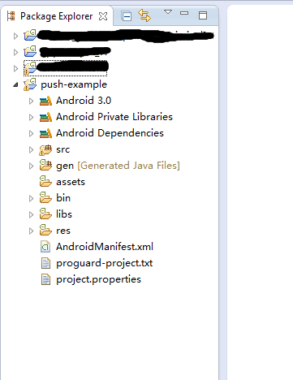
右键点击demo工程，选择Export
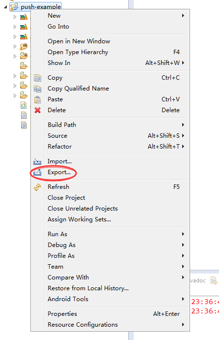
选择导出目标位Gradle build文件，并确认
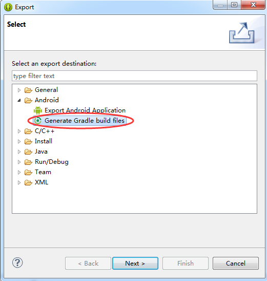 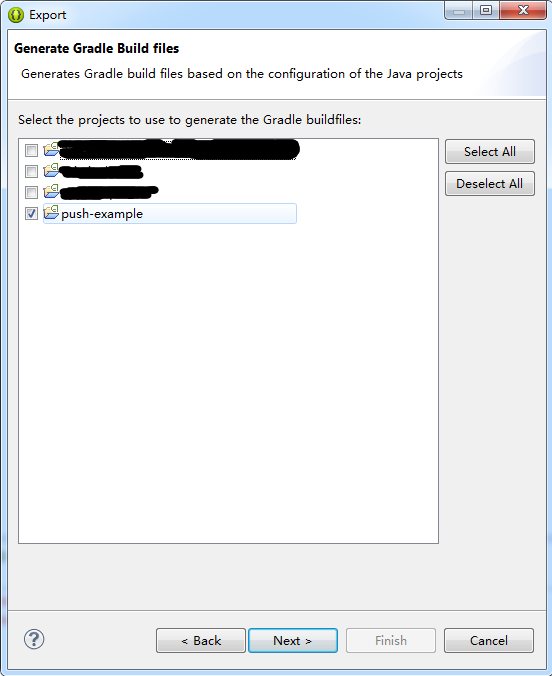 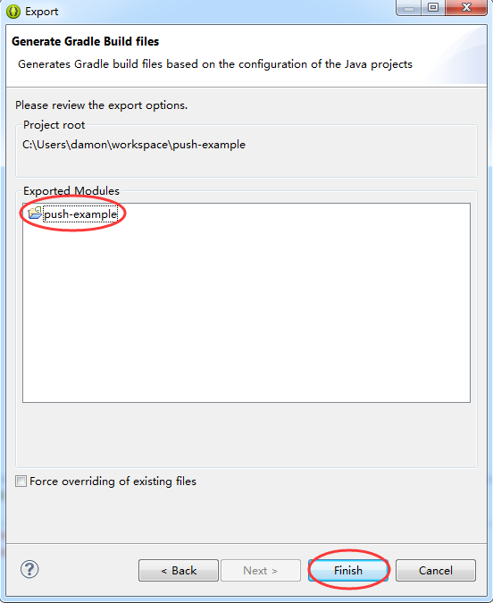 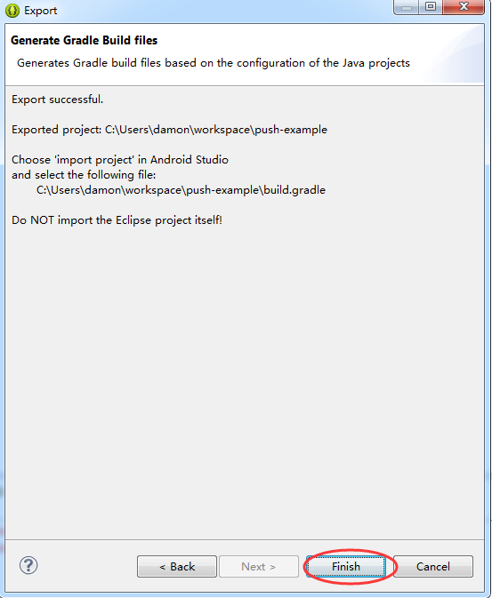
从文件浏览器中检查
在Eclipse的workspace中，该Demo工程的文件夹中，生成了Gradle相关配置文件.
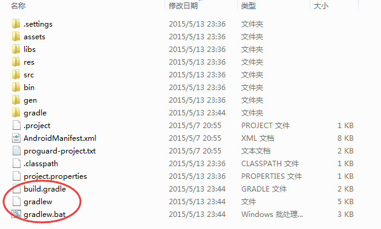
打开你的Android Studio工程，选择 File->Import Module
在Android Studio中，一次只能打开一个Project，它相当于Eclipse中的一个workspace。而我们从Eclipse中导出的一个Project，则相当于Android Studio中的一个Module。
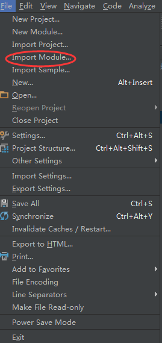
选择Eclipse workspace下的Demo工程，并确认
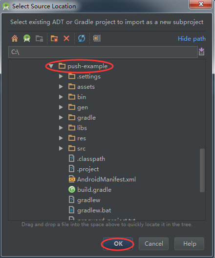
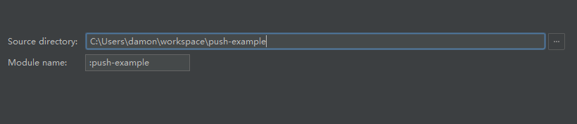
查看导入的Module，并且gradle会自动生成编译选项
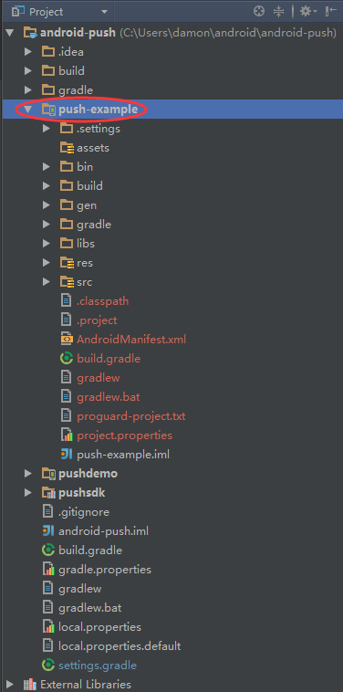
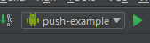
现在就可以将极光推送Demo作为Android Studio的Module运行在真机或虚拟机上，并调试了
高级功能
请参考：
技术支持
邮件联系：support@jpush.cn